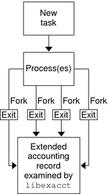

|
|||
|
Solaris Virtualization Product Overview 1. Introduction to Solaris Resource Management 2. Projects and Tasks (Overview) 3. Administering Projects and Tasks 4. Extended Accounting (Overview) Introduction to Extended Accounting Extended Accounting Configuration Commands Used With Extended Accounting 5. Administering Extended Accounting (Tasks) 6. Resource Controls (Overview) 7. Administering Resource Controls (Tasks) 8. Fair Share Scheduler (Overview) 9. Administering the Fair Share Scheduler (Tasks) 10. Physical Memory Control Using the Resource Capping Daemon (Overview) 11. Administering the Resource Capping Daemon (Tasks) 13. Creating and Administering Resource Pools (Tasks) 14. Resource Management Configuration Example 15. Resource Control Functionality in the Solaris Management Console 16. Introduction to Solaris Zones 17. Non-Global Zone Configuration (Overview) 18. Planning and Configuring Non-Global Zones (Tasks) 19. About Installing, Halting, Cloning, and Uninstalling Non-Global Zones (Overview) 20. Installing, Booting, Halting, Uninstalling, and Cloning Non-Global Zones (Tasks) 21. Non-Global Zone Login (Overview) 22. Logging In to Non-Global Zones (Tasks) 23. Moving and Migrating Non-Global Zones (Tasks) 24. About Packages and Patches on a Solaris System With Zones Installed (Overview) 25. Adding and Removing Packages and Patches on a Solaris System With Zones Installed (Tasks) 26. Solaris Zones Administration (Overview) 27. Administering Solaris Zones (Tasks) 28. Troubleshooting Miscellaneous Solaris Zones Problems 29. About Branded Zones and the Linux Branded Zone 30. Planning the lx Branded Zone Configuration (Overview) 31. Configuring the lx Branded Zone (Tasks) 32. About Installing, Booting, Halting, Cloning, and Uninstalling lx Branded Zones (Overview) 33. Installing, Booting, Halting, Uninstalling and Cloning lx Branded Zones (Tasks) 34. Logging In to lx Branded Zones (Tasks) 35. Moving and Migrating lx Branded Zones (Tasks) 36. Administering and Running Applications in lx Branded Zones (Tasks) 37. Sun xVM Hypervisor System Requirements 38. Booting and Running the Sun xVM Hypervisor 40. Using virt-install to Install a Domain |
How Extended Accounting WorksThe extended accounting facility in the Solaris Operating System uses a versioned, extensible file format to contain accounting data. Files that use this data format can be accessed or be created by using the API provided in the included library, libexacct (see libexacct(3LIB)). These files can then be analyzed on any platform with extended accounting enabled, and their data can be used for capacity planning and chargeback. If extended accounting is active, statistics are gathered that can be examined by the libexacct API. libexacct allows examination of the exacct files either forward or backward. The API supports third-party files that are generated by libexacct as well as those files that are created by the kernel. There is a Practical Extraction and Report Language (Perl) interface to libexacct that enables you to develop customized reporting and extraction scripts. See Perl Interface to libexacct. With extended accounting enabled, the task tracks the aggregate resource usage of its member processes. A task accounting record is written at task completion. Interim records on running processes and tasks can also be written. For more information on tasks, see Chapter 2, Projects and Tasks (Overview). Figure 4-1 Task Tracking With Extended Accounting ActivatedExtensible FormatThe extended accounting format is substantially more extensible than the SunOSTM legacy system accounting software format (see What is System Accounting? in System Administration Guide: Advanced Administration). Extended accounting permits accounting metrics to be added and removed from the system between releases, and even during system operation. Note - Both extended accounting and legacy system accounting software can be active on your system at the same time. exacct Records and FormatRoutines that allow exacct records to be created serve two purposes.
The format permits different forms of accounting records to be captured without requiring that every change be an explicit version change. Well-written applications that consume accounting data must ignore records they do not understand. The libexacct library converts and produces files in the exacct format. This library is the only supported interface to exacct format files. Note - The getacct, putacct, and wracct system calls do not apply to flows. The kernel creates flow records and writes them to the file when IPQoS flow accounting is configured. Using Extended Accounting on a Solaris System with Zones InstalledThe extended accounting subsystem collects and reports information for the entire system (including non-global zones) when run in the global zone. The global administrator can also determine resource consumption on a per-zone basis. See Extended Accounting on a Solaris System With Zones Installed for more information. |
||
|